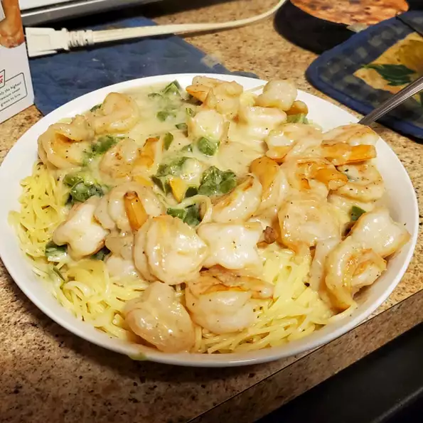

Shrimp Pasta

A wonderful shrimp pasta recipe!
This recipe will feed up to 8 people in one serving. This recipe contains eight different ingredients with only a few steps to make. This meal will take up to 45 minutes to prepare. The pasta will include shrimp, peppers, and much more. This meal is great for a large family.
Ingredients
- 1 (16 ounce) jar Alfredo-style pasta sauce
- 1 (16 ounce) package angel hair pasta
- 2 pounds fresh shrimp, peeled and deveined
- 1 cup butter, melted
- ½ small green bell pepper, diced
- ½ small red onion, finely chopped
- 1 teaspoon garlic powder
- ½ teaspoon ground cumin
Steps
- In a saucepan over low-temperature, heat the Alfredo sauce. Bring a large pot of lightly salted water to a boil. Add pasta and cook for 8 minutes or until al dente; drain.
- Boil shrimp in a large pot of water until they turn orange. Then place in bowl with melted butter. Let shrimp marinate for 15 to 30 minutes; remove. In a large skillet over medium heat, saute the green pepper and onion in a small amount of oil.
- Mix together the cooked pasta, shrimp, pepper-onion mixture and Alfredo sauce. Season with garlic powder and cumin.